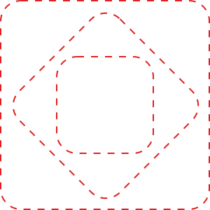
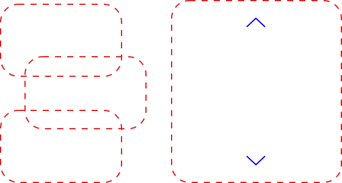

Containers & Sections
This system uses 2 main types of components.
A Section, which is a container that houses content.
Containers control the size, position and animation of the content within them, but can also be used to nest sub-containers. They additionally determine which pieces of content work in conjunction.
Content
The second type is a Block which is the content itself. This ranges across image file types, videos, text and UI elements.
A content Block can have required or optional fields. Those fields can also be authorable (with a CMS), which is the functionality that modular design systems rely on the most.
This is what creates large amounts of permutations so that design layouts can vary per page and per amount of content.
Nesting levels
This type of system relies on nesting (or including) sub-elements, but up to a certain degree.
It’s all noticeably flexible if the nesting architecture stops at the 3rd level.
Systems that go beyond 3 levels can function and in some cases are required, but it's best to avoid them where possible.
Flexible & sustainable
This may be an over simplification, but based on my experience they tend to compound issues in regression testing and maintenance. And it's painful to add new elements in a small space, down the road.
When creating a component, it’s clear that we have to design those atomic elements as part of the component itself, rather than treating them separately and including them as standalone atoms.
Section Block
Handles space, size, position, alignment and transitions.
Media Block
Displays images and videos.
Description Block
20 authorable fields made up of double-weighted headlines, pre and post headers, body copy, buttons, audio triggers, timestamps, etc.
Accessibility Controls
These are included inside Media Blocks that require accessibility controls. In this case, there's Play/Pause, Volume on/off and a transcript modal.
Media & Copy

One of the most commonly used components. Media & Copy is used to display image or video assets inline with a Description Block.
There's a variety of alignment options illustrated further below.
Offset and Full-Height Containers
The Offset container lets components overlap one another.
While the Full-Height container fills the device viewport with an image or video.
Multi-panel Layout
An elaborate layout component that displays multiple animated Offset Containers, which themselves house Media & Copy components.
Sticky Container
A series of corresponding Media Blocks and Description Blocks that cycle in and out of view, when the user scrolls.
The Media Block can also display specific timestamps in a video file, making it look like the user is rotating a 3D image (like seen in the Ram example further down the page).
Sticky Hotspots
Behaves like the Sticky Container, but has accessible Hotspots which display a point of interest on top of the image, corresponding to the Description Block that's in view.
Scrolling Media
Cycles through an array of images to create the illusion that a 3D asset is floating and rotating as the user scrolls up or down.
Cinematic Hero
An immersive component with background videos that are triggered depending on the mouse position.
Navigation
On desktop, scrolling up and down the page will update the status indicator in the navigation.
On mobile, the same navigation opens an accessible overlay to let users jump to other sections of the page.
Column range
Row alignment
Offsets
Floats
1. Containers & Sections
This system uses 2 main types of components.
A Section, which is a container that houses content.
Containers control the size, position and animation of the content within them, but can also be used to nest sub-containers. They additionally determine which pieces of content work in conjunction.
2. Content
The second type is a Block which is the content itself. This ranges across image file types, videos, text and UI elements.
A content Block can have required or optional fields. Those fields can also be authorable (with a CMS), which is the functionality that modular design systems rely on the most.
This is what creates large amounts of permutations so that design layouts can vary per page and per amount of content.
3. Nesting levels
This type of system relies on nesting (or including) sub-elements, but up to a certain degree.
It’s all noticeably flexible if the nesting architecture stops at the 3rd level.
Systems that go beyond 3 levels can function and in some cases are required, but it's best to avoid them where possible.
4. Flexible & sustainable
This may be an over simplification, but based on my experience they tend to compound issues in regression testing and maintenance. And it's painful to add new elements in a small space, down the road.
When creating a component, it’s clear that we have to design those atomic elements as part of the component itself, rather than treating them separately and including them as standalone atoms.
5. Section Block
Handles space, size, position, alignment and transitions.
6. Media Block
Displays images and videos.
7. Description Block
20 authorable fields made up of double-weighted headlines, pre and post headers, body copy, buttons, audio triggers, timestamps, etc.
8. Accessibility Controls
These are included inside Media Blocks that require accessibility controls. In this case, there's Play/Pause, Volume on/off and a transcript modal.
9. Media & Copy
One of the most commonly used components. Media & Copy is used to display image or video assets inline with a Description Block.
There's a variety of alignment options illustrated further below.
10. Offset and Full-Height Containers
The Offset container lets components overlap one another.
While the Full-Height container fills the device viewport with an image or video.
11. Multi-panel Layout
An elaborate layout component that displays multiple animated Offset Containers, which themselves house Media & Copy components.
12. Sticky Container
A series of corresponding Media Blocks and Description Blocks that cycle in and out of view, when the user scrolls.
The Media Block can also display specific timestamps in a video file, making it look like the user is rotating a 3D image (like seen in the Ram example further down the page).
13. Sticky Hotspots
Behaves like the Sticky Container, but has accessible Hotspots which display a point of interest on top of the image, corresponding to the Description Block that's in view.
14. Scrolling Media
Cycles through an array of images to create the illusion that a 3D asset is floating and rotating as the user scrolls up or down.
15. Cinematic Hero
An immersive component with background videos that are triggered depending on the mouse position.
16. Navigation
On desktop, scrolling up and down the page will update the status indicator in the navigation.
On mobile, the same navigation opens an accessible overlay to let users jump to other sections of the page.